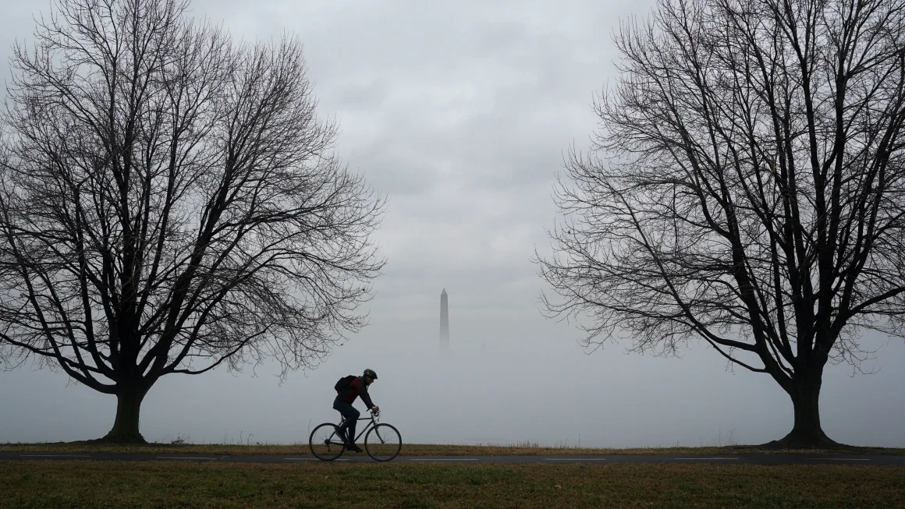

Stuck in a fog? It’s not just you, it’s been record foggy in the US
Impacted by dense fog Thursday morning? So were over 90 million others across the continental United States.Dense fog alerts were so extensive nationwide that they reached record levels for the third consecutive day. The alerts are issued by the National Weather Service when widespread fog is expected to drop visibility levels to a quarter mile or less for at least two hours.